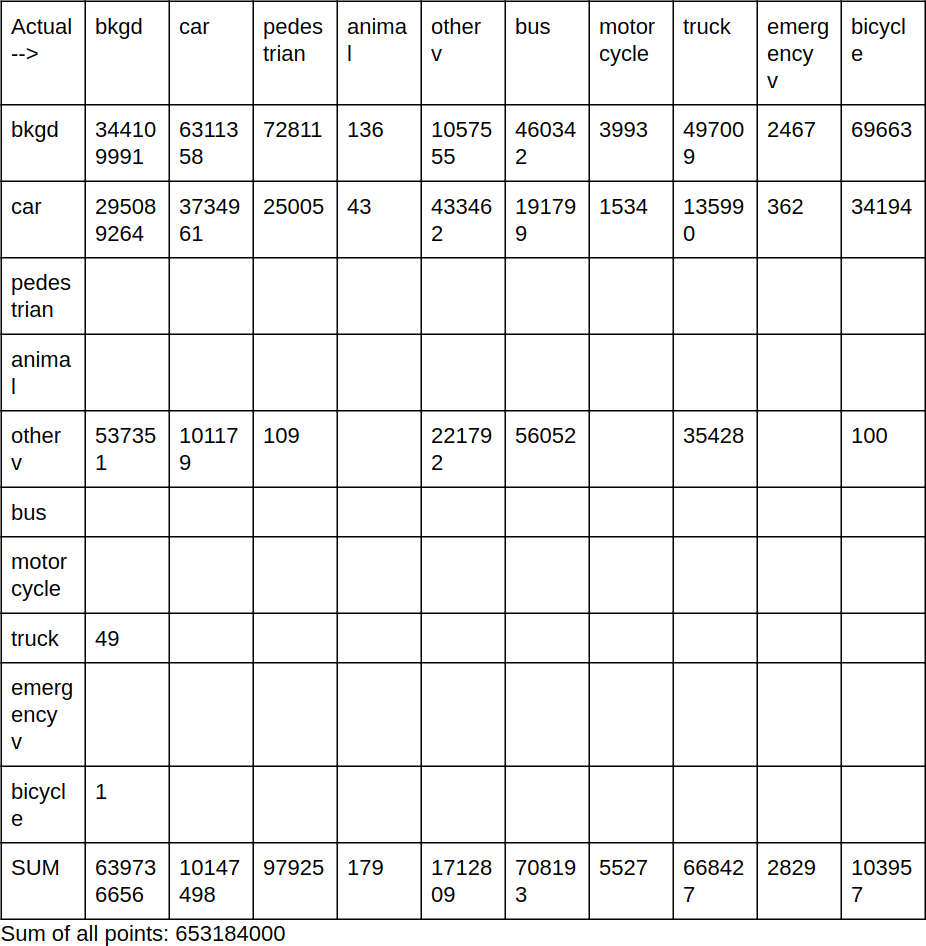

2019 12 13
Model:
inputs = Input(shape=input_shape)
X = Conv2D(64, (3, 3), activation='relu', padding='same')(inputs)
X = MaxPooling2D(pool_size=(4, 4), padding='same')(X)
X = Dropout(0.25)(X)
#Now split into two, one for O_C and other for B_C
O_C = Conv2DTranspose(10, (3,3),
activation='softmax',
strides=(4,4), padding='same',
name="Output_Channels")(X)
B_C = Conv2DTranspose(24, (3,3),
activation='tanh',
strides=(4,4), padding='same',
name="Box_Corners")(X)
model = Model(
inputs=inputs,
outputs=[O_C, B_C],
name="Lyft")
Data: Training data set splitted into 80 and 20 ratio.
Confusion matrix obtained after 1 epoch:

Overall accuracy: 0.533